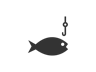
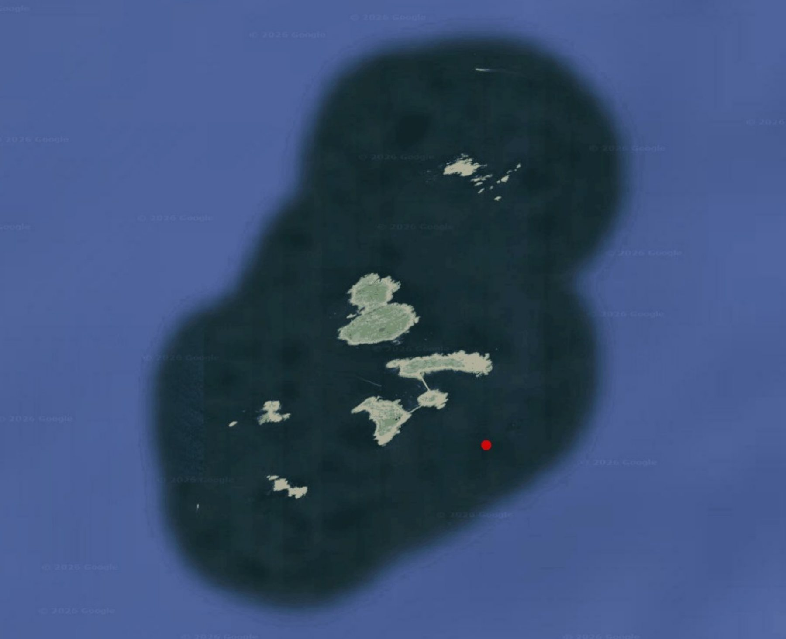

Where to find them
How to read the maps
- Remote underwater video site, higher abundance
- Remote underwater video site, seen infrequently
- Successful trap or seine effort (for seine species, blue diamonds also mark reliable tern foraging)

Successful rod and reel catch- Red marks on the dark bathymetry maps show bait-fishing catch locations

Select a marker for details. Open in the full map
Bait fishing is conducted for the Shoals Marine Laboratory class, Shark Biology and Conservation. Sculpin once were caught south of Cedar Ridge (42.9729667, 70.6016333) as well as at Old Scantum and “The Nipper” (not shown here, see chart at end of guide)
.